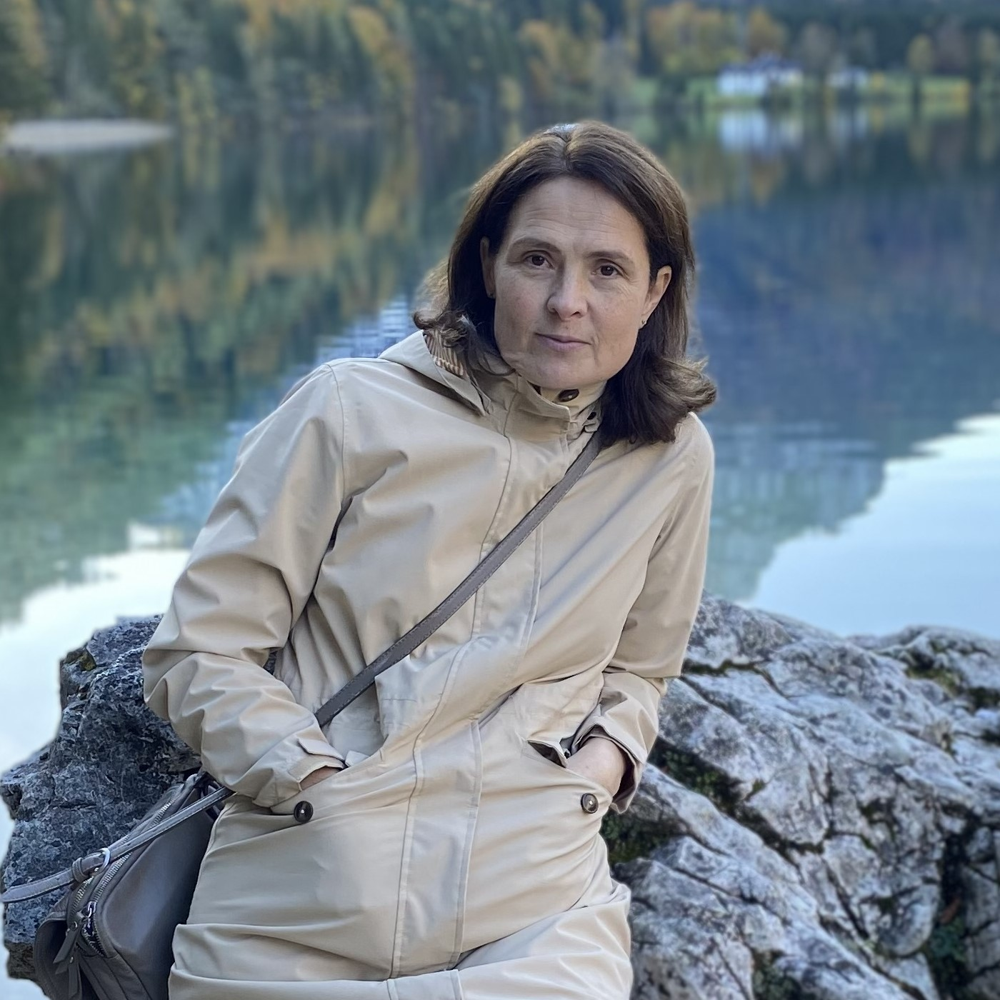

Rodinné centrum pro děti, rodiče a seniory v Českých Budějovicích
"Nabízíme aktivity pro celé rodiny, vzdělávací programy pro děti, rodiče i seniory, vytváříme prostor pro vícegenerační pospolitost, podílíme se na obnově tradic ve městě."
O nás
Klub Hrajánek zahájil svou činnost v lednu 2017 pod ČMP. Velký zájem ze strany rodičů i dětí vedl k rozšíření aktivit Klubu Hrajánek a tak přechází jeho činnost od července 2020 pod Rodinné centrum Společný stůl, z.s..
Rodinné centrum Společný stůl, z.s. si klade za cíl:
Podporovat rodiny- hodnotu rodiny, děti a jejich zdravý rozvoj, rodiče na mateřské a rodičovské dovolené, prarodiče a mezigenerační dialog.
Upozorňovat ve společnosti na důležitost rodiny, role otce, matky a prarodičů.
Rozvíjet a upevňovat rodičovské kompetence.
Napomáhat vývoji osobnosti dítěte. Věnovat se pozvolné a citlivé socializaci dítěte.
Při své činnosti vychází z pedagogiky Franze Ketta. Více na www.kett.cz
Děti
Děti mohou růst a zrát v rodině a trávit s matkou a rodinou většinu času a zároveň:
pomalu okusit společnost druhých dětí
poznat jinou autoritu nežli rodiče a prarodiče- (vychovatelka)
dostat nové podněty- nové hry, říkanky, písničky, hračky, jiné prostředí
zvládnout i samostatný pobyt v dětském klubu bez rodičů.
Rodiče
Samozřejmě také navazují nové kontakty s dalšími rodiči a tráví v herně příjemné chvíle buď při společném nebo individuálním programu. Rodiče mohou doprovázet dítě v kolektivu a pomáhat mu. Když pak dítě tráví čas v dětském klubu samostatně, maminky mají možnost -po následné konzultaci- zjistit silné a slabé stránky svého dítěte v této nové situaci. Podle toho mohou směřovat svá rozhodnutí ohledně nástupu dítěte do kolektivního zařízení.
V neposlední řadě, pokud se adaptace dítěte v dětském klubu povede (a to bývá dost často), přináší čas, který má rodič pro sebe, velkou vzpruhu a pomoc. Jedná se o 1-4hodiny nebo i více podle potřeb dítěte a rodiče. Pokud je třeba delší doba- záleží na domluvě s ohledem na dítě.
Nabízíme setkání u kávy či čaje, přednášky, společné tvoření, cvičení, společné návštěvy zajímavých výstav a kulturních akcí, atd. Velkým obohacením všech zúčastněných jsou programy pro seniory a děti, kdy vzájemná sdílení jsou velmi cenná.
O Vaše děti se budou starat
Magdaléna Kodymová
V roce 1995 maturovala na SZŠ České Budějovice, obor Dětská sestra. Od té doby pracovala 10 let v nemocnici na dětském oddělení, 3 roky pečovala o svou babičku, pracovala v městských jeslích a v Klubíku Hrajánek při ČMP. Absolvovala kurzy pedagogiky Franze Ketta a pedagogiky Marie Montessori. Je matkou 2 synů. Učím se stále více a více přistupovat k druhému s úctou.
Mgr. Zdeňka Jarošíková
Vystudovala Střední zdravotnickou školu - obor všeobecná sestra,
Jihočeskou univerzitu v Českých Budějovicích Zdravotně sociální fakultu - obor:
Rehabilitační péče o postižené děti, dospělé a staré osoby, kurz po střediskem ZvaS (Asistent pedagoga, pedagog volného času a vychovatel). Pracovala v Nemocnici České Budějovice a.s. - zdravotní sestra na Kardiologickém oddělení a na oddělení Následné péče, v MŠ, ZŠ, SŠ pro sluchově postižené Riegrova České Budějovice - vychovatelka a
zdravotní sestra Letní dětské integrační canisterapeutické tábory, Dětské tábory, Péče o autistického chlapce, instruktor plavání. S manželem vychovávají syna Jiříka.

Inna Shandarova
Absolvovala Střední odbornou školu zdravotnickou města Melitopol, obor všeobecná
zdravotní sestra -mám nostrifikaci. Vystudovala Pedagogickou fakultu na univerzitě města Melitopol, obor učitelka biologie a ekologie. S manželem vychovali jednu vlastní dceru a nyní vychovávají dvě dcery adoptované. V Hrajánku Inna pracuje od ledna 2022. U dětí je velmi oblíbená a svou pracovitostí zachrání vše.
Setkání rodičů s dětmi - v herně nebo na zahrádce. Herna je bohatě vybavena hezkými hračkami a knihami. Lze si vypůjčit i montessori pomůcky. Rodiče si mohou dát kávu nebo čaj a k tomu si vypůjčit knihu. Pro děti je k dispozici drobné občerstvení. V kuchyňce si lze půjčit nádobí a ohřát jídlo v mikrovlnce.
Prosíme Vás, abyste se nahlásili předem.
Herna:
po-pá: 8:00 - 11:30 / 15:00 - 17:00
Zahrádka:
po-pá: 8:00 - 10:00
Dětský klub Skřítek Hrajánek
Celodenní péče o děti, po - pá: 7:00 - 17:00
Pro děti od 0-6 let
Počet dětí 15 na 3-4 chůvy
Nenahrazuje povinné předškolní vzdělávání
Možnost samostatného pobytu dítěte po adaptaci. Čas i délka pobytu dle domluvy. Dítě je vybaveno na dobu pobytu potřebným oblečením, plenami, jídlem a pitím, vhodnou oblíbenou hračkou, knihou - kterou si vyrobí spolu s rodiči doma (podle návodu od Hrajánka).
Přihláška do dětského klubu Skřítek Hrajánek ke stažení
Vnitřní řád Rodinného centra Společný stůl z.s. ke stažení
Dítě přichází do Dětského klubu s rodičem každý den (3-5dní) v domluvený čas na 1 hodinu.
Rodič sedí u stolu a "má svou práci" a dítě pomalu pozoruje nebo se zapojuje do dodění v klubu či si samostatně hraje. V tu dobu je v klubu omezený počet dětí (4 děti + chůva).
Podle průběhu a po domluvě rodiče a chůvy je možné zkusit již 4. a 5. den (0,5-1h) samostatný pobyt dítěte.
Nejlepší je začít s adaptací hned na začátku září, kdy ještě nejsou rozjeté kroužky a je tudíž na adaptaci čas.
To, co je popsáno výše, je určitý model. Každý z nás ale - každé dítě a každý rodič i chůva - je originál. Proto je třeba opravdu postupovat individuálně, navázat vztahy- chůvy a rodiče, chůvy a děti, nebát se a věřit si navzájem.
Při procesu adaptace je třeba také brát v úvahu možnosti a potřeby rodiny.


{kind=link}